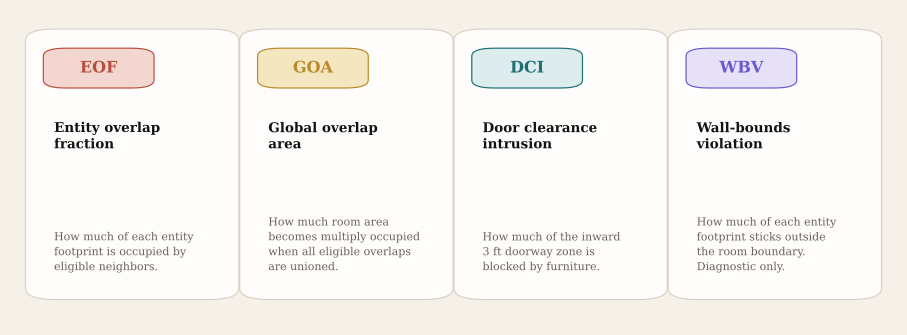
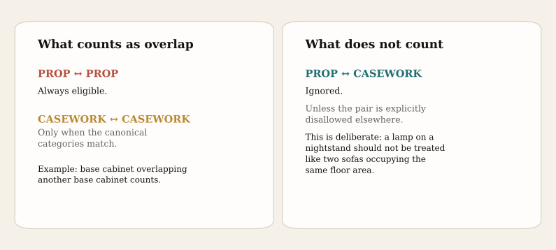
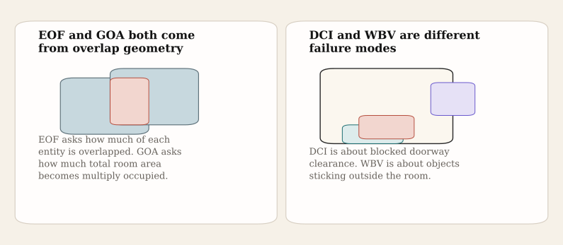
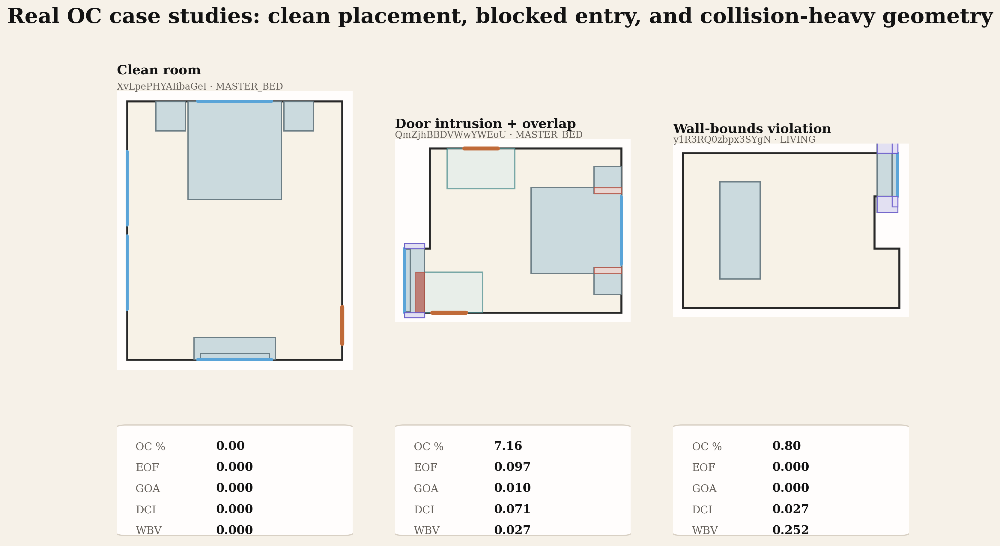
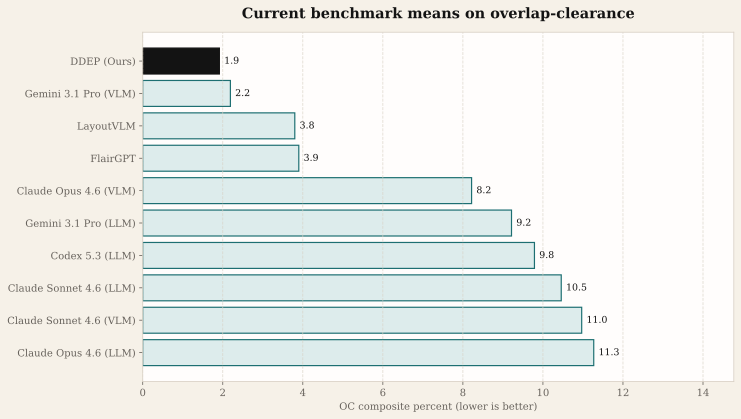

Overlap and Clearance
Coverage tells us whether the right inventory is present. Navigability tells us whether a person can enter and reach essential targets. Overlap-clearance is the geometry cleanup metric: it measures collisions, blocked doorway zones, and objects that stick outside the room.
In the current benchmark, the composite uses 0.5 × EOF + 0.2 × GOA + 0.3 × DCI. Wall-bounds violation is still computed and reported, but excluded from the composite because it is strongly correlated with overlap.
The Four Quantities
The OC code computes four quantities per room. Three feed the reported composite percentage. One stays diagnostic.

WBV carries weight zero because wall-boundary violations are strongly correlated with EOF — entities protruding outside the room also register as overlapping with the room boundary. Including both would double-count. WBV is still computed and reported as a separate diagnostic.
The non-zero weights reflect benchmark priorities. Object-object collisions matter most. Doorway blockage matters next. Global overlap area matters too, but it is a smaller correction on top of the per-entity overlap fraction.
Not Every Intersection Counts
The metric is deliberately selective about which overlaps are meaningful. Prop-prop overlaps count. Same-category casework overlaps count. Prop-casework overlaps are ignored, because they often represent intentional arrangements rather than impossible floor occupancy.


Real Benchmark Rooms
These three heldout DDEP rooms show the metric in practice: one clean room, one bedroom where both door intrusion and entity overlap appear, and one living room where furniture extends beyond wall bounds.

Try The Composite
This calculator mirrors the current composite exactly. Slide the three composite inputs and see how the percentage moves. WBV remains separate and diagnostic.
OC Calculator
Low OC means little collision geometry and mostly clear door zones.
How To Read It Alongside The Other Metrics
OC is not a replacement for coverage or navigability. It is the metric that makes bad geometry explicit. A room can cover the right inventory and still have a poor OC score because cabinets overlap or the door zone is blocked. A room can also navigate well overall while still accumulating some non-essential geometry issues.

EOF
Best for answering: are furniture footprints colliding in impossible ways?
GOA
Best for answering: how much total room area becomes multiply occupied?
DCI
Best for answering: is the entry zone itself blocked?
WBV
Best for answering: are objects protruding outside the room even if the composite stays moderate?